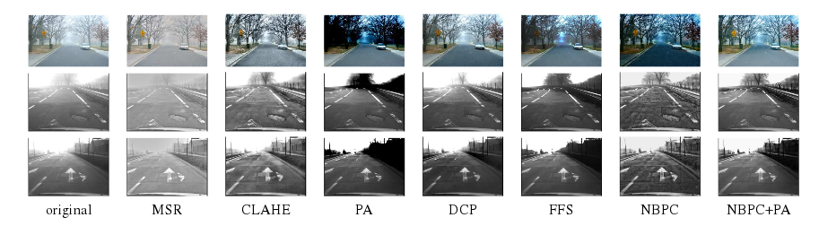

Abstract
One source of accidents when driving a vehicle is the presence of fog. Fog fades the colors and reduces the contrasts in the scene with respect to their distances from the driver. Various camera-based Advanced Driver Assistance Systems (ADAS) can be improved if efficient algorithms are designed for visibility enhancement in road images. The visibility enhancement algorithm proposed in 1 is not optimized for road images. In this paper, we reformulate the problem as the inference of the local atmospheric veil from constraints. The algorithm in 1 thus becomes a particular case. From this new derivation, we propose to better handle road images by introducing an extra constraint taking into account that a large part of the image can be assumed to be a planar road. The advantages of the proposed local algorithm are the speed, the possibility to handle both color and gray-level images, and the small number of parameters. A new scheme is proposed for rating visibility enhancement algorithms based on the addition of several types of generated fog on synthetic and camera images. A comparative study and quantitative evaluation with other state-of-the-art algorithms is thus proposed. This evaluation demonstrates that the new algorithm produces better results with homogeneous fog and that it is able to deal better with the presence of heterogeneous fog. Finally, we also propose a model allowing to evaluate the potential safety benefit of an ADAS based on the display of defogged images.
Bibtex
@article{jpt-itsm12,
author = {Tarel, J.-P. and Hautière, N. and Caraffa, L. and Cord, A. and Halmaoui, H. and Gruyer, D.},
title = {Vision Enhancement in Homogeneous and Heterogeneous Fog},
journal = {IEEE Intelligent Transportation Systems Magazine},
volume = {4}, number = {2}, month = {Summer}, year = {2012}, pages = {6--20},
publisher = {IEEE}, note = {http://perso.lcpc.fr/tarel.jean-philippe/publis/itsm12.html} }
Footnotes:
Tarel, Jean-Philippe, and Nicolas Hautiere. "Fast visibility restoration from a single color or gray level image." 2009 IEEE 12th International Conference on Computer Vision. IEEE, 2009.